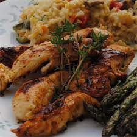

Lemon Thyme Chicken Tenders

Sauteed chicken tenders get a flavor boost from fresh lemon and thyme
We are going to combine oilve oil, garlic, chopped thyme, lemon zest, and lemon juice in a large mixing bowl.
Spray a non stick pan with cooking spray over medium high heat and cook until hot or about 4 minutes per side.
Ingredients
- 2 tablespoonds olive oilve oil
- 1 clove garlic, minced
- 6 springs fresh thyme
- 1 tablespoon lemon zest
- 1/4 cup lemon juice
- salt and pepper to taste
- 1 pount chikcen breast tenders
- olive oil-flavored cooking spray
Steps
- Combine olive oil, garlic, chopped thyme, lemon zest, and lemon juice in a large mixing bowl.
- Season the chikcne tenders with salt and pepper.
- Toss chicken with the olive oil micture.
- Spray non stick skillet with cooking spray>
- Cook chicken tenders on hot pan until lightly brown or 4 minutes on each side.